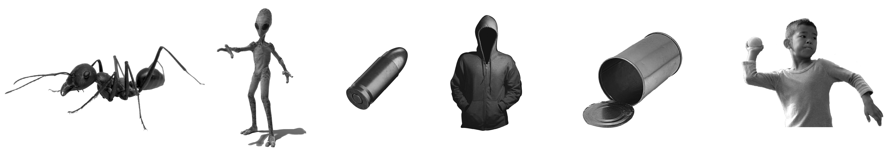
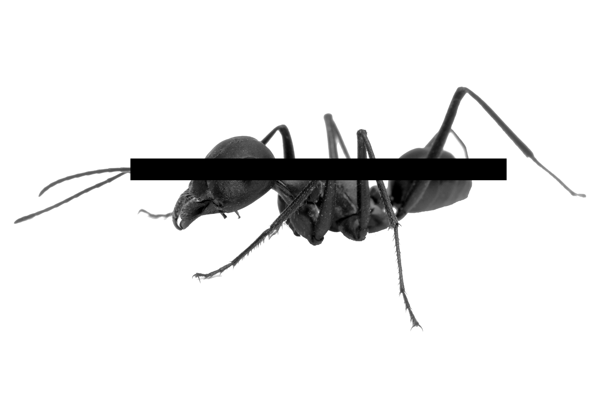
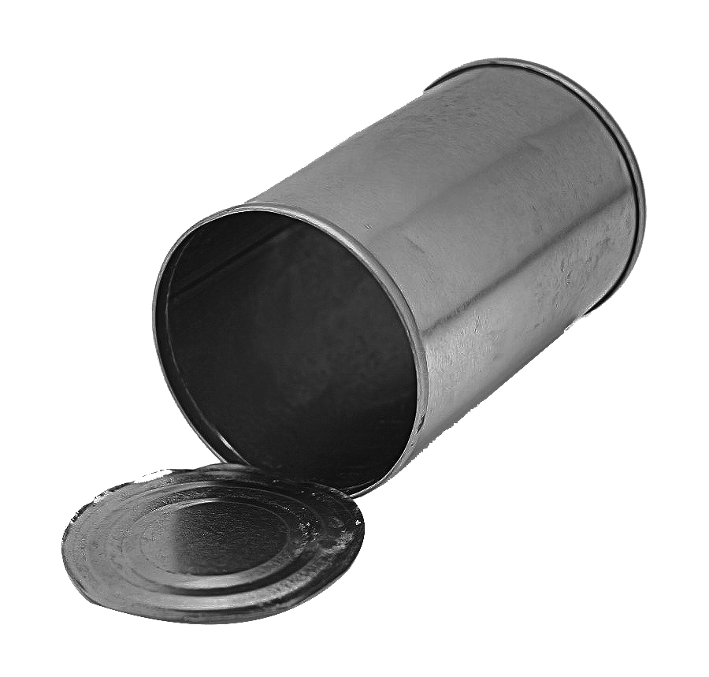

주린이를 위한
은어사전
알쏭달쏭한 주식 은어를 알아보자

개미? 외계인? 총알? 세력? 깡통? 던지다?
주식이 핫하다고 하니 나도 좀 기웃거려볼까 하고 커뮤니티, 카페 등을 좀 둘러보는데 도통 요상한 언어만 가득했던
그들의 대화에 주눅들고 경계심을 가졌던 때가 기억난다. 그리하여 주린이로서는 도저히 짐작 할 수 없는 그들만의
용어를 함께 알아보고자 한다.

개미
개인투자자를 의미한다. 유사용어로 동학개미,서학개미,
슈퍼개미 등 다양한 변형이있다.
외계인
외국인 및 외국계 투자자를 의미한다. 외인, 왜구라는 표현도 찾아볼 수 있다.
총알
본인이 소유한 자본금을 뜻한다.시드(시드머니)라는 표현도 찾아볼 수 있다.
세력
거대자본을
바탕으로 주가를
급등락 시키는
단체를 뜻한다.

깡통
원금을 모두 손실한
상태를 뜻한다.